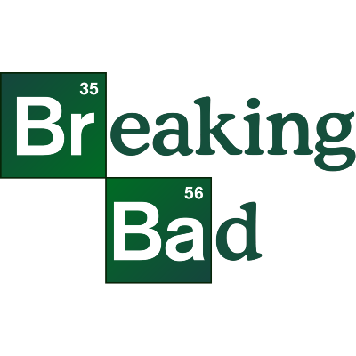
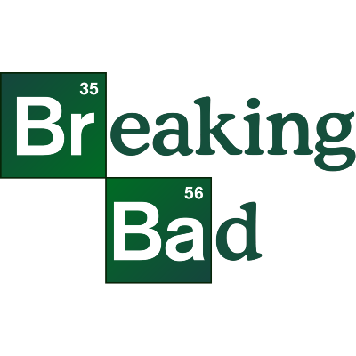

I'm a big retro game fan. From the third generation to the fifth, mostly. I never really liked second gen games, to be completely honest. And I've never had a sixth or seventh gen console.
Some of the best games of all time (in my opinion)


My favourite console generation has got to be the fourth. Why? I
don't know, tbh. Everything just has so much charm in this era.
Like, every new invention feels so magical to experience.
My favourite genre is the first person shooter. Fast-paced,
punishing, and chaotic old ones, not the very slow new ones. I also
play lots of fighting games.
Movies and series I'm obsessed with
 

I've ever only watched two animes in my entire life, and they're the
Castlevania Animated Series and Persona animated series adaptations.
Surprisingly good video game adaptations.
Bands I listen to all the time